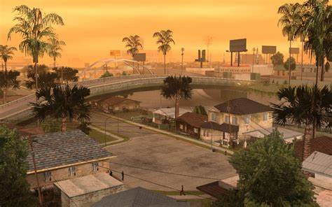

Los Santos - GTA San Andreas

Uno de los barrios menos conocidos
Casa de una familia tranquila, aquí no han matado a nadie.
Lista de personas importantes, sin antecedentes penales:
Carl Johnson A.K.A.
CJ
Sweet Johnson
Ryder
Big Smoke